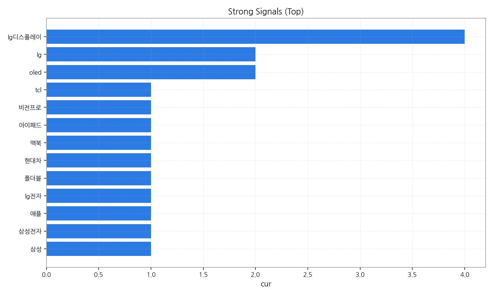
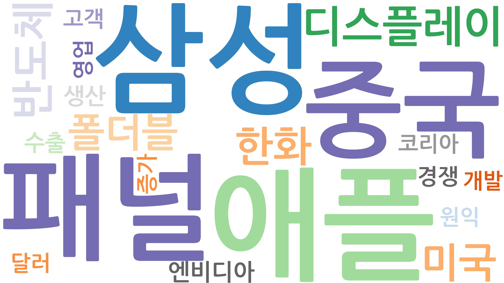
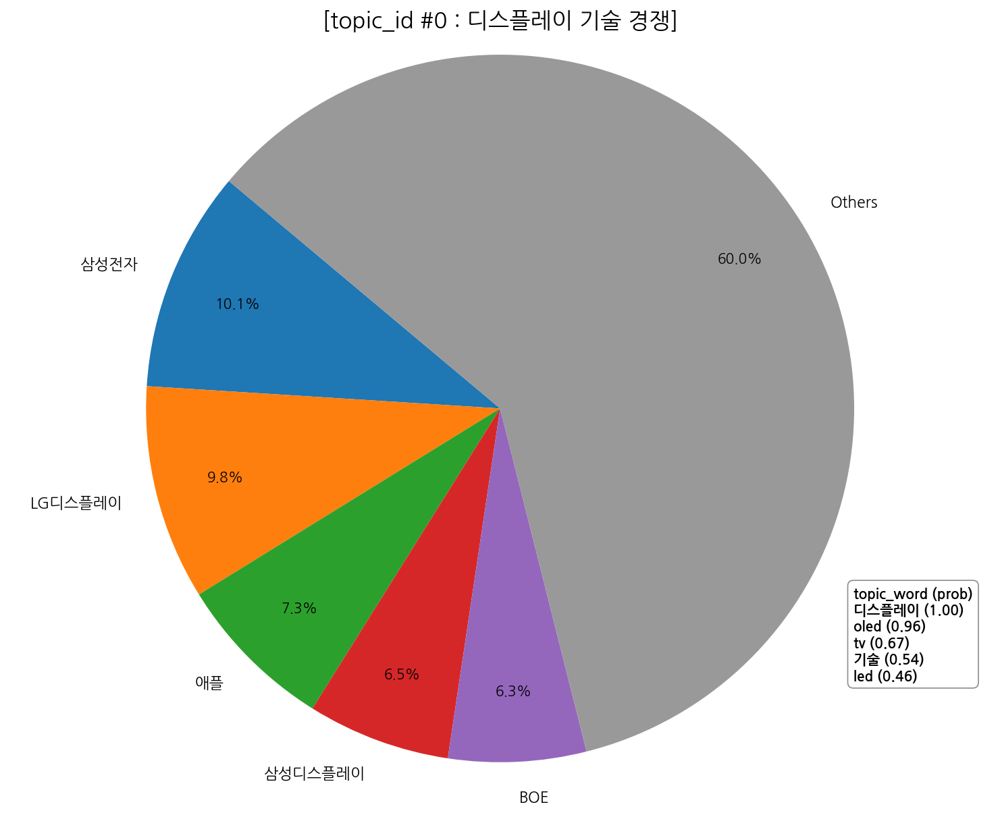
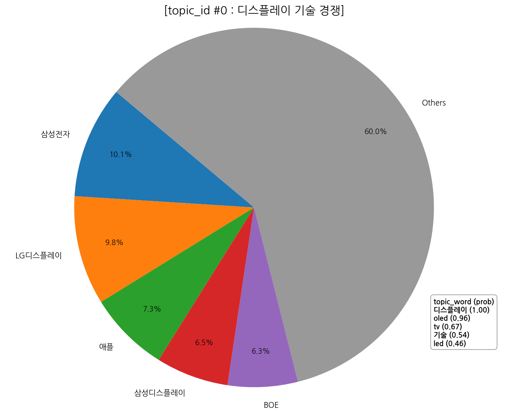
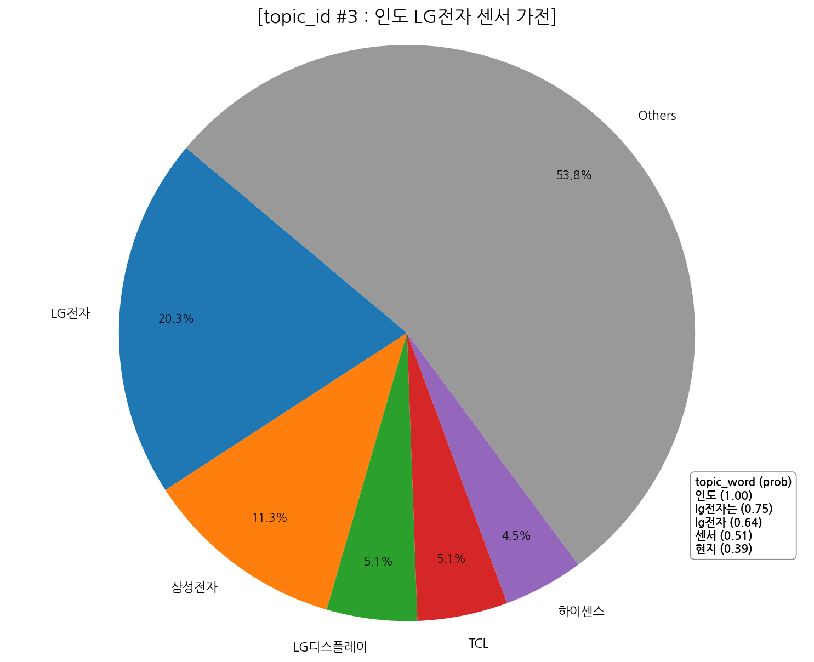
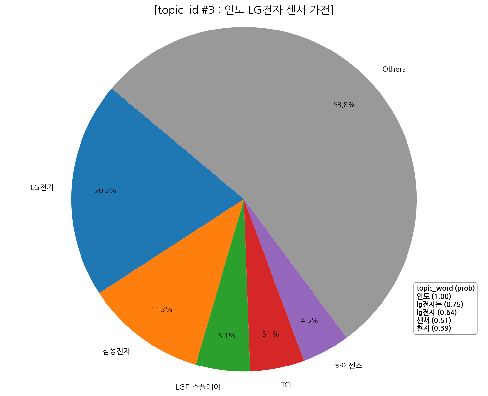
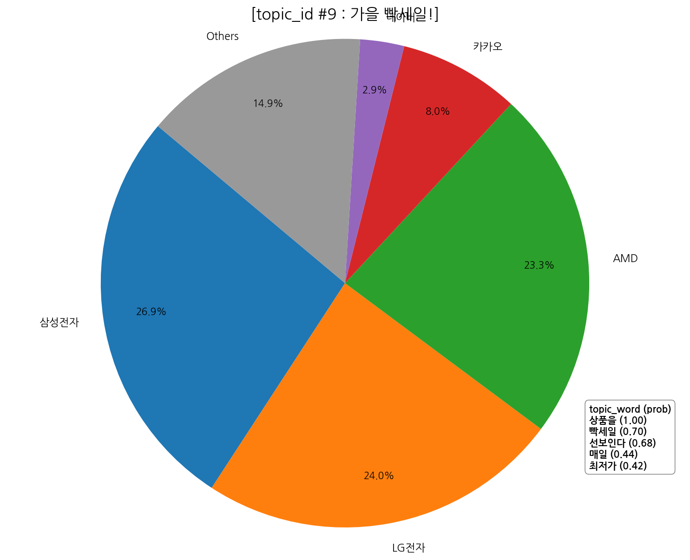
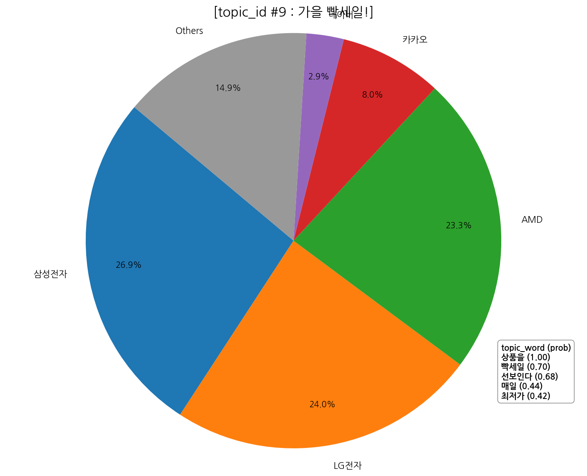
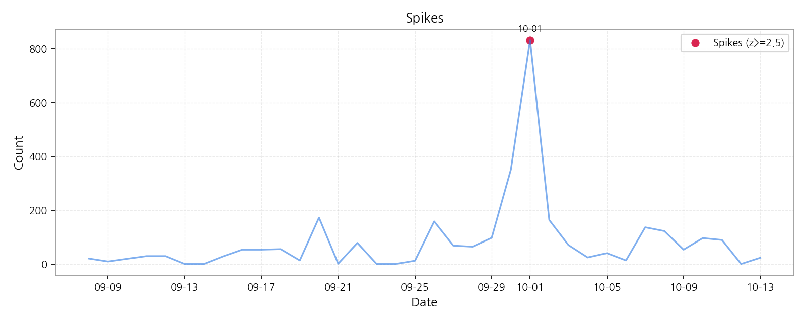
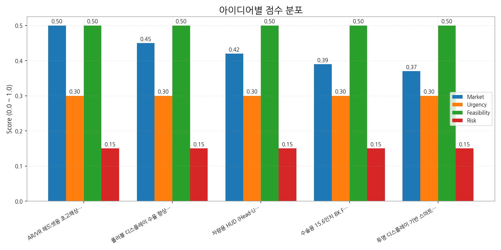

핵심 요약 - 기간: 2025-09-08 ~ 2025-10-13 - 기사 수: 2,970 - 토픽 수: 10 | 상위 키워드: 20

이번 주 하이라이트 - ## 데일리 인텔리전스 브리핑 (디스플레이 산업) - 1. 핵심 맥락 - * 중국 디스플레이 산업의 부상과 기술 경쟁 심화: 중국은 정부 지원과 공격적인 투자로 OLED, 특히 스마트폰 OLED 패널 시장에서 한국을 빠르게 추격하고 있습니다 (Topic 6). 이는 디스플레이 기술 경쟁 (Topic 0)과 AI 반도체 기술 패권 경쟁 (Topic 4)과 맞물려, 디스플레이 산업 전반의 경쟁 구도를 격화시키고 있습니다. 중국은 저가 공세뿐 아니라 기술력 향상을 통해 프리미엄 시장까지 넘보고 있으며, 이는 한국 디스플레이 기업에게 큰 위협 요인입니다. - * 프리미엄 디스플레이 시장의 성장과 기술 혁신 경쟁: OLED 패널 시장은 스마트폰을 넘어 TV, 자동차 등 다양한 분야로 확장되고 있으며, 폴더블 디스플레이와 같은 혁신적인 기술이 시장 성장을 견인하고 있습니다 (Topic 0, 6, 8). 애플과 같은 주요 고객사의 영향력이 커짐에 따라, 디스플레이 기업들은 차별화된 기술력 확보를 위해 AI, 센서 기술 (Topic 3, 7) 등과 융합을 시도하고 있습니다. 또한, 마이크로 LED와 같은 차세대 디스플레이 기술 개발 경쟁도 치열하게 전개되고 있습니다. - * 글로벌 무역 환경 변화와 시장 다변화 필요성: 미중 무역 갈등 (Topic 5)은 디스플레이 산업에도 영향을 미치고 있으며, 특히 철강 투자 하락은 디스플레이 제조 비용 상승으로 이어질 수 있습니다. 따라서, 특정 국가에 대한 의존도를 낮추고 인도 (Topic 3)와 같은 신흥 시장으로의 진출을 확대하는 등 시장 다변화 전략이 중요해지고 있습니다. - 2. 인사이트 - * 기회: - * 프리미엄 시장 선점: 폴더블, 롤러블 등 혁신적인 폼팩터와 고화질, 저전력 기술을 통해 프리미엄 디스플레이 시장에서 차별화된 경쟁력을 확보할 수 있습니다. - * AI 및 센서 기술 융합: AI 기반 화질 개선, 사용자 맞춤형 디스플레이, 센서 기반 인터랙션 등 새로운 가치를 창출하여 시장 경쟁력을 강화할 수 있습니다. - * 신흥 시장 진출: 인도, 동남아시아 등 성장 잠재력이 높은 신흥 시장을 적극적으로 공략하여 새로운 성장 동력을 확보할 수 있습니다. - * 위험: - * 중국 디스플레이 산업의 급성장: 중국 기업들의 기술력 향상과 저가 공세는 한국 디스플레이 기업의 수익성을 악화시킬 수 있습니다. - * 글로벌 무역 환경 불확실성: 미중 무역 갈등 심화, 보호무역주의 확산 등은 디스플레이 산업의 공급망 및 시장에 부정적인 영향을 미칠 수 있습니다. - * 기술 혁신 경쟁 심화: OLED를 넘어 마이크로 LED, 양자점 디스플레이 등 차세대 기술 개발 경쟁에서 뒤쳐질 경우 시장 경쟁력을 상실할 수 있습니다. - * 경쟁 구도: - * 한국 vs. 중국: OLED, LCD 등 주요 디스플레이 시장에서 한국과 중국 기업 간의 경쟁이 더욱 심화될 것으로 예상됩니다. - * 삼성 vs. LG: OLED TV 시장에서 삼성과 LG의 경쟁이 더욱 치열해질 것으로 예상됩니다. - * 디스플레이 패널 제조사 vs. 세트 제조사: 애플과 같은 세트 제조사의 영향력이 커짐에 따라, 디스플레이 패널 제조사들은 기술 협력 및 차별화된 가치 제공을 통해 경쟁력을 확보해야 합니다. - 3. Action Items - * 차세대 디스플레이 기술 개발 투자 확대: 마이크로 LED, 양자점 디스플레이 등 차세대 기술 개발에 대한 투자를 확대하고, 기술 로드맵을 구체화해야 합니다. - * AI 및 센서 기술 융합 전략 수립: AI 및 센서 기술을 디스플레이에 융합하여 새로운 가치를 창출하고, 관련 기술 개발 및 인력 확보에 집중해야 합니다. - * 글로벌 시장 다변화 전략 실행: 인도, 동남아시아 등 신흥 시장 진출을 위한 구체적인 전략을 수립하고, 현지 파트너십 구축 및 맞춤형 제품 개발에 힘써야 합니다.
| 제목 | 링크 |
|---|---|
| 10월 3주 주요 제조업 전망 | https://www.laborplus.co.kr/news/articleView.html?idxno=36385 |
| 삼성전자의 부활… 역대 최대 분기 매출로 영업익 12조원 돌파 | https://www.greenpostkorea.co.kr/news/articleView.html?idxno=304363 |
| LGD·에코프로비엠·호텔신라…3분기 실적 개선 기대株 뜬다 | https://www.hankyung.com/article/2025101481961 |
| 9월 ICT 수출, 반도체 호조세에 역대 최대 실적 달성···14.0%↑ | http://www.todaykorea.co.kr/news/articleView.html?idxno=335341 |
| 삼성전자는 '깜짝실적'·LG전자는 '주춤'…희비 엇갈린 3분기 실적 | https://it.chosun.com/news/articleView.html?idxno=2023092148850 |
| 기간 | 총 기사 수 | 문서 수 | 상위 키워드 수 | 토픽 수 | 시계열 일수 |
|---|---|---|---|---|---|
| 2025-09-08 ~ 2025-10-13 | 2970 | 0 | 20 | 10 | 36 |
해석 가이드: 전주 대비 증감률을 함께 보아야 변화를 정확히 해석할 수 있습니다. 그래서: 문서/기사 수가 급증하면 키워드/토픽 점유 구조가 바뀔 가능성이 큽니다. 다음 액션: 이상값이 보이면 타임라인 섹션의 변곡점 주석과 함께 원인을 추적하세요.
핵심 요약 - 상위 키워드 분포와 클러스터를 통해 테마 맥락을 파악합니다. - 점수 상승과 긍정 감성 결합은 유망 신호입니다.

| 순위 | 키워드 | 점수 | 변화(참고) |
|---|---|---|---|
| 1 | 애플 | 0.851 | |
| 2 | 삼성 | 0.807 | |
| 3 | 패널 | 0.755 | |
| 4 | 중국 | 0.608 | |
| 5 | 디스플레이 | 0.505 | |
| 6 | 반도체 | 0.494 | |
| 7 | 한화 | 0.452 | |
| 8 | 미국 | 0.438 | |
| 9 | 폴더블 | 0.399 | |
| 10 | 엔비디아 | 0.323 | |
| 11 | 생산 | 0.313 | |
| 12 | 경쟁 | 0.288 | |
| 13 | 수출 | 0.283 | |
| 14 | 고객 | 0.277 | |
| 15 | 코리아 | 0.271 | |
| 16 | 증가 | 0.268 | |
| 17 | 원익 | 0.265 | |
| 18 | 달러 | 0.263 | |
| 19 | 영업 | 0.26 | |
| 20 | 개발 | 0.248 |
해석 가이드: 클러스터는 규제/정책, 공급망, 수요/고객 등 테마로 해석하면 빠릅니다. 그래서: 상위 키워드가 네트워크 허브와 겹치면 시장 영향력이 높은 신호일 가능성이 큽니다. 다음 액션: 해당 키워드를 포함한 토픽과 기업 교차점(매트릭스 섹션)을 확인하세요.
핵심 요약 - 관심도(X), 긍정성(Y), 성장률(색상)로 토픽 지형을 한눈에 파악합니다. - 상위 토픽의 미니 시계열로 모멘텀을 점검합니다.


| topic_id | topic_summary |
|---|---|
| 0 | OLED, LED, LCD, 마이크로 LED 등 디스플레이 기술 발전과 TV 시장 경쟁, 특히 중국 기술 성장과 장비 산업의 핵심 기술 경쟁을 다룸. |
| 1 | 홍콩 브랜드가 한국 고객을 대상으로 할인 행사를 진행하는 것에 대한 뉴스입니다. Lee라는 이름이 등장하는 것으로 보아 특정 브랜드 또는 관계자의 이름일 수 있습니다. 공식적인 구매 채널을 통해 할인이 제공되는 것… |
| 2 | APEC CEO 서밋과 정상회의, 그리고 한화의 방산 및 발광재료 관련 활동을 다루는 내용입니다. |
| 3 | LG전자가 인도 시장을 겨냥해 센서 기술을 적용한 가전 제품을 현지에서 생산 또는 판매하는 것과 관련된 뉴스입니다. |
| 4 | 미국과 중국 간의 AI 반도체 기술 경쟁 심화, 전기차, 자동차, 디스플레이 등 핵심 산업 전반에 걸친 기술 패권 다툼이 주요 내용임. |
| 5 | 트럼프 시기 미중 무역 갈등 심화 속, 중국 철강 투자 하락 및 가격 변동 가능성을 보여주는 뉴스. 추가적인 무역 관련 조치 가능성도 내포. |
| 6 | 3분기 스마트폰 OLED 패널 시장에서 한국과 중국 간 경쟁 심화, 애플의 영향력, LCD와 OLED 출하량 변화 등을 다룸. 광학 기술도 관련 있는 것으로 보임. |
| 7 | AI 기능과 4K 해상도, PTZ 기능을 지원하는 카메라 및 스마트폰 연동, NDI 지원 등에 대한 뉴스. |
| 8 | OLED 패널과 반도체 산업의 3분기 실적 (매출, 영업이익)을 전년 동기와 비교 분석하고 AI 관련 내용도 포함. |
| 9 | 가을을 맞아 패션, 식품 등 인기 상품을 매일 최저가로 판매하는 빡세일 행사. |
해석 가이드: 성장률이 높고 긍정성이 유지되는 토픽은 우선 탐색 대상입니다. 그래서: 토픽 성장과 기업 진입 변화가 동시에 보이면 시장 전환점일 가능성이 있습니다. 다음 액션: 상위 토픽을 기업×토픽 매트릭스에서 교차 확인하고, 기회/리스크로 분기하세요.
핵심 요약 - 가장 경쟁 치열 토픽: 디스플레이, oled - 가장 집중도 높은 기업: 삼성전자 - 최고 단일 조합: 삼성전자 × oled, 3분기
 


 



 



| org | topic_0 | topic_1 | topic_2 | topic_3 | topic_4 | topic_5 | topic_6 | topic_7 | topic_8 | topic_9 |
|---|---|---|---|---|---|---|---|---|---|---|
| AMD | 11.09 (1%) | 19.41 (5%) | nan | nan | 25.65 (2%) | 24.02 (3%) | 12.18 (1%) | 9.76 (3%) | 28.73 (2%) | 80.88 (23%) |
| AUO | 30.50 (2%) | 4.85 (1%) | nan | 1.62 (0%) | 24.26 (2%) | 12.01 (1%) | 16.48 (1%) | 5.26 (1%) | 11.91 (1%) | nan |
| BMW | 6.93 (0%) | 8.09 (2%) | 1.98 (1%) | 3.24 (1%) | 11.78 (1%) | 3.75 (0%) | 2.15 (0%) | nan | 4.20 (0%) | nan |
| BOE | 90.11 (6%) | 15.37 (4%) | nan | 13.75 (3%) | 77.63 (5%) | 75.08 (8%) | 88.87 (7%) | 20.27 (6%) | 67.98 (5%) | nan |
| BYD | 9.01 (1%) | 6.47 (2%) | nan | 4.85 (1%) | 12.48 (1%) | 9.01 (1%) | 7.88 (1%) | 2.25 (1%) | 2.80 (0%) | nan |
| CES | 2.08 (0%) | 0.81 (0%) | nan | nan | 2.08 (0%) | 1.50 (0%) | nan | nan | 0.70 (0%) | 1.26 (0%) |
| CSOT | 48.52 (3%) | 6.47 (2%) | nan | 10.51 (3%) | 38.12 (3%) | 37.54 (4%) | 51.60 (4%) | 8.26 (2%) | 39.95 (3%) | nan |
| ETRI | 0.69 (0%) | nan | nan | nan | 0.69 (0%) | nan | 0.72 (0%) | nan | nan | nan |
| IEC | 4.16 (0%) | nan | nan | 0.81 (0%) | 7.62 (1%) | nan | 0.72 (0%) | 2.25 (1%) | 2.80 (0%) | nan |
| IEEE | 3.47 (0%) | nan | nan | 3.24 (1%) | 4.85 (0%) | 2.25 (0%) | 2.87 (0%) | 2.25 (1%) | 2.80 (0%) | nan |
| ITU | 4.16 (0%) | nan | nan | 0.81 (0%) | 7.62 (1%) | nan | 0.72 (0%) | 2.25 (1%) | 2.80 (0%) | nan |
| Innolux | 32.58 (2%) | 10.51 (3%) | nan | 9.71 (2%) | 29.11 (2%) | 15.02 (2%) | 16.48 (1%) | 4.50 (1%) | 12.61 (1%) | nan |
| IoT | 17.33 (1%) | 11.32 (3%) | nan | 8.90 (2%) | 19.41 (1%) | 10.51 (1%) | 8.60 (1%) | 4.50 (1%) | 7.71 (1%) | nan |
| JDI | 11.78 (1%) | 2.43 (1%) | nan | 1.62 (0%) | 11.78 (1%) | 6.01 (1%) | 12.90 (1%) | 1.50 (0%) | 11.91 (1%) | nan |
| KAIST | 4.16 (0%) | nan | nan | 0.81 (0%) | 7.62 (1%) | nan | 0.72 (0%) | 2.25 (1%) | 2.80 (0%) | nan |
| LG디스플레이 | 140.71 (10%) | 12.94 (3%) | nan | 21.03 (5%) | 111.60 (7%) | 75.08 (8%) | 144.77 (11%) | 17.27 (5%) | 119.84 (9%) | nan |
| LG전자 | 72.78 (5%) | 37.21 (10%) | nan | 84.12 (20%) | 72.78 (5%) | 46.55 (5%) | 51.60 (4%) | nan | 70.78 (6%) | 83.40 (24%) |
| LG화학 | 13.86 (1%) | 0.81 (0%) | nan | 3.24 (1%) | 18.71 (1%) | 6.01 (1%) | 4.30 (0%) | 0.75 (0%) | 5.61 (0%) | nan |
| SID | 6.24 (0%) | 0.81 (0%) | nan | nan | 5.55 (0%) | 3.00 (0%) | 3.58 (0%) | nan | 2.10 (0%) | 1.26 (0%) |
| SK하이닉스 | 22.18 (2%) | 4.85 (1%) | nan | 7.28 (2%) | 32.58 (2%) | 18.77 (2%) | 15.77 (1%) | 8.26 (2%) | 38.54 (3%) | nan |
해석 가이드: 히트맵에서 진한 교차지점은 전략 초점을 의미합니다. 점수는 소스 커버리지에 민감합니다. 그래서: 경쟁 치열 토픽에서의 점유율 변화는 공격/수비 전략 신호일 수 있습니다. 다음 액션: 상위 기업과 토픽 교차를 기회 섹션으로 연결하고, 파트너/경쟁사 움직임을 추적하세요.
핵심 요약 - 관계망 규모: 노드 38개 / 엣지 85개 - 가장 강한 관계: 삼성전자 ↔ 애플 (가중치 30, 유형 neutral) - 허브 후보: 삼성전자 (Degree 0.6486) - 브로커 후보: 삼성전자 (Betweenness 0.3425)
동일 문서/문장에서 함께 언급된 기업 쌍이며, 가중치는 동시출현 빈도입니다. 유형은 규칙 기반 추정입니다.
| Source | Target | Weight | Type |
|---|---|---|---|
| 삼성전자 | 애플 | 30 | neutral |
| 삼성디스플레이 | 삼성전자 | 26 | rivalry |
| 삼성디스플레이 | 애플 | 20 | rivalry |
| 샤오미 | 애플 | 12 | partnership |
| 삼성전자 | 엔비디아 | 12 | partnership |
| 삼성전자 | 샤오미 | 12 | rivalry |
| 메타 | 애플 | 10 | neutral |
| 마이크로소프트 | 한화 | 10 | partnership |
| 구글 | 애플 | 10 | neutral |
| 한화 | 한화시스템 | 9 | partnership |
Degree 중심성은 연결된 상대 수의 비율입니다. 높을수록 허브 성격.
| Org | DegreeCentrality |
|---|---|
| 삼성전자 | 0.6486 |
| 애플 | 0.4865 |
| 샤오미 | 0.3784 |
| 메타 | 0.2703 |
| 삼성디스플레이 | 0.2703 |
| 엔비디아 | 0.2162 |
| 마이크로소프트 | 0.1892 |
| 구글 | 0.1622 |
| 아마존 | 0.1622 |
| 오포 | 0.1622 |
Betweenness는 집단 간 ‘다리’ 역할 정도입니다. 높을수록 중개자 성격.
| Org | Betweenness |
|---|---|
| 삼성전자 | 0.3425 |
| 애플 | 0.109 |
| 샤오미 | 0.0358 |
| 마이크로소프트 | 0.0252 |
| 한화 | 0.0234 |
| 메타 | 0.0215 |
| 삼성디스플레이 | 0.0178 |
| 엔비디아 | 0.0156 |
| 퀄컴 | 0.0061 |
| 아마존 | 0.0056 |
모듈러리티 기반 자동 추출 집단. 같은 집단 내 기업은 유사 주제/밸류체인 공유 가능성. - C0: 기아자동차, 네이버, 디지타임스, 미디어텍, 비보, 삼성디스플레이 | 해석: 기아자동차 중심의 연관 클러스터 - C1: 마이크로소프트, 아마존, 알파벳, 엔비디아, 인텔, 한화 | 해석: 마이크로소프트 중심의 연관 클러스터 - C2: 구글, 메타, 샤오미, 샤오펑, 선익시스템 | 해석: 구글 중심의 연관 클러스터 - C3: 기아, 퀄컴, 현대자동차, 현대차 | 해석: 기아 중심의 연관 클러스터 - C4: 레노버 | 해석: 레노버 중심의 연관 클러스터

해석 가이드: 동시출현이 높은 쌍은 경쟁/협력 가능성을 시사합니다. 그래서: 허브/브로커 포지션은 영향력/협상력을 가리킵니다. 다음 액션: 커뮤니티별 주요 토픽/키워드와 교차하여 전략 단위를 정의하세요.
핵심 요약 - 기간: 2025-09-08 ~ 2025-10-13 - 총 기사 수: 2,970 - 일별 기사 수와 7일 이동평균, 변곡점을 주석으로 표시합니다.


| date | count | z |
|---|---|---|
| 2025-10-01 | 832 | 5.12315 |
해석 가이드: 단기 급등은 이벤트성 가능성이 있으니 2주 추세를 함께 보세요. 그래서: 스파이크 이후 토픽/신호 방향을 교차 확인하면 원인 파악이 빨라집니다. 다음 액션: 스파이크 날짜의 주요 기사와 키워드 변동을 키워드/토픽 섹션에서 재확인하세요.

| term | cur | z_like | prev | diff | ma7 | total |
|---|---|---|---|---|---|---|
| lg디스플레이 | 4 | 1.171 | 0 | 4 | 1.429 | 77 |
| tcl | 1 | 0.622 | 0 | 1 | 0.143 | 1 |
| 비전프로 | 1 | 0.622 | 0 | 1 | 0.143 | 2 |
| 아이패드 | 1 | 0.622 | 0 | 1 | 0.143 | 5 |
| 맥북 | 1 | 0.465 | 0 | 1 | 0.286 | 8 |
| 현대차 | 1 | 0.074 | 1 | 0 | 0.857 | 24 |
| 폴더블 | 1 | -0.195 | 3 | -2 | 1.429 | 22 |
| lg | 2 | -0.366 | 0 | 2 | 3 | 255 |
| oled | 2 | -0.366 | 0 | 2 | 3 | 136 |
| lg전자 | 1 | -0.464 | 1 | 0 | 2.143 | 37 |
| 애플 | 1 | -0.773 | 2 | -1 | 3.143 | 68 |
| 삼성전자 | 1 | -1.299 | 8 | -7 | 5.286 | 93 |
| 삼성 | 1 | -1.673 | 6 | -5 | 7.143 | 329 |
해석 가이드: 약한 신호는 가속도·이례성이 핵심이고, 강한 신호는 현재 주목도의 절대값입니다. 그래서: 약한→강한 신호로 전환하는 구간이 가장 좋은 기회가 됩니다. 다음 액션: 상위 신호 5개를 2주간 추적하고, 토픽/기업 매트릭스와 교차 검증하세요.
핵심 요약 - 관심도(X), 긍정성(Y), 버블(사업 활발도)로 기술의 위치를 표현합니다. - 단계: Seed/Early/Growth/Mature/Legacy

| 기술 | 단계 | 판단 근거 |
|---|---|---|
| 폴더블 | Growth | 뉴스 언급 빈도, 시장 감성 점수, 출시 및 수주 이벤트 발생 건수를 종합적으로 고려했을 때, 폴더블 기술은 시장 성장 단계에 진입했다고 판단됩니다. |
| 애플 | Maturity | 높은 뉴스 언급 빈도, 안정적인 시장 감성 점수, 그리고 투자, 출시, 수주 이벤트가 꾸준히 발생한다는 점에서 성숙기에 접어들었다고 판단됩니다. |
| 패널 | Growth | 뉴스 언급은 적지만 출시 건수가 많고 투자도 발생하고 있어 시장 성장기에 진입한 것으로 판단된다. |
| 삼성 | Growth | 높은 뉴스 언급 빈도, 긍정적인 시장 감성, 활발한 투자 및 출시 이벤트 발생은 삼성 기술이 성장기에 있음을 나타낸다. |
해석 가이드: Growth 구간이면서 강한 신호 결합 시 유망합니다. 그래서: Early라도 약한 신호가 누적되면 전환 후보입니다. 다음 액션: 상위 기술 3개를 기회 섹션과 연결하고 파일럿 과제를 정의하세요.

| 아이디어 | 타깃 | 가치제안 | 점수(시장/긴급/실행/리스크) |
|---|---|---|---|
| AR/VR 헤드셋용 초고해상도 가변 주사율 Micro-OLED 패널 개발 | 북미 빅테크 기업 (AR/VR 헤드셋 제조사) | 업계 최고 수준의 해상도 및 주사율 제공, 몰입감 극대화 및 멀미감 최소화, 저전력 설계 및 소형화 구현, 사용자 맞춤형 디스플레이 설정 기능 제공 | 3.7 (0.5/0.3/0.5/0.15) |
| 롤러블 디스플레이 수율 향상을 위한 AI 기반 공정 최적화 서비스 | 국내외 디스플레이 패널 제조사 (롤러블 디스플레이 생산 라인) | AI 기반 실시간 공정 데이터 분석 및 예측, 롤러블 디스플레이 수율 20% 이상 향상, 불량 발생 예측 및 사전 예방, 공정 최적화 컨설팅 및 기술 지원 제공 | 3.5 (0.45/0.3/0.5/0.15) |
| 차량용 HUD (Head-Up Display) 증강현실(AR) 글라스 일체형 개발 | 글로벌 완성차 OEM (Tier 1 부품사 협력) | 운전자 시야 전체를 활용한 AR 정보 제공, 넓은 시야각 및 뛰어난 시인성 확보, 운전 안전성 및 편의성 극대화, 경쟁사 대비 차별화된 프리미엄 HUD 경험 제공 (기존 HUD 대비 30% 이상 넓은 시야각) | 3.4 (0.42/0.3/0.5/0.15) |
| 수술용 15.6인치 8K Flexible OLED 패널 개발 | 글로벌 의료기기 제조사 (수술용 로봇, 내시경 장비) | 최고 수준의 해상도 및 명암비 제공, 자유로운 각도 조절 및 곡면 구현을 통한 최적의 시야 확보, 의료진의 피로도 감소 및 수술 정확도 향상, 멸균 환경에 적합한 디자인 및 소재 적용 | 3.3 (0.39/0.3/0.5/0.15) |
| 투명 디스플레이 기반 스마트 윈도우 (Smart Window) 개발 | 글로벌 건설사, 건축 설계사무소, 고급 주택/빌딩 개발업체 | 최고 수준의 투명도 및 시야각 제공, 건물 에너지 효율 향상 및 프라이버시 보호, 다양한 정보 제공 및 인터랙티브 기능 제공, 고급스러운 디자인 및 사용자 맞춤형 설정 기능 제공 | 3.2 (0.37/0.3/0.5/0.15) |
해석 가이드: 점수는 내부 가중치 기반(예: Market 0.35, Urgency 0.25, Feasibility 0.25, Risk -0.15). 그래서: 상위안은 단기 임팩트/실행 가능성이 높은 편입니다. 다음 액션: 각 아이디어에 대해 2주 파일럿(가설·대상·KPI)을 정의하고 담당 오너를 배정하세요.
해석 가이드: 부정 감성 급등은 PR·컴플라이언스·조달과 연계가 필요합니다. 그래서: 공급망 키워드와 동반 급등 시 실제 운영 리스크로 이어질 수 있습니다. 다음 액션: 영향범위가 큰 이슈는 즉시 리스크 레지스터에 등록하고 완화 액션을 실행하세요.
| hypothesis | target | kpi | owner | due |
|---|---|---|---|---|
| 토픽 A 관심도↑는 고객 니즈 증가 | SMB 고객 20명 인터뷰 | 응답률 30%/신규 리드 10건 | 사업개발팀 | 2025-10-28 |
해석 가이드: 데이터-인사이트-액션의 연결을 표준 템플릿으로 기록하세요. 그래서: 우선순위 상위 안건부터 빠르게 실험해야 기회를 놓치지 않습니다. 다음 액션: 오너/기한/KPI가 명확한 항목부터 킥오프하세요.
분석의 투명성을 확보하고, 다음 단계 분석을 위한 원천 자료를 제공합니다.
| 파일 | 수정시각 | 크기(bytes) |
|---|---|---|
| outputs/keywords.json | 2025-10-14 14:59:19 | 1531 |
| outputs/topics.json | 2025-10-14 14:59:41 | 11647 |
| outputs/trend_timeseries.json | 2025-10-14 14:59:21 | 2143 |
| outputs/trend_insights.json | 2025-10-14 14:59:51 | 8262 |
| outputs/biz_opportunities.json | 2025-10-14 15:00:50 | 27173 |
| outputs/tech_maturity.json | 2025-10-14 15:00:26 | 2145 |
| outputs/company_network.json | 2025-10-14 15:00:32 | 17580 |
해석 가이드: 재현성과 감사추적을 위해 생성일, 버전, 파라미터를 함께 보관하세요. 그래서: 데이터 출처와 가공 과정을 명확히 남기면 신뢰성이 높아집니다. 다음 액션: 주요 이미지/표 생성 실패 로그도 추적 테이블로 남겨두세요.